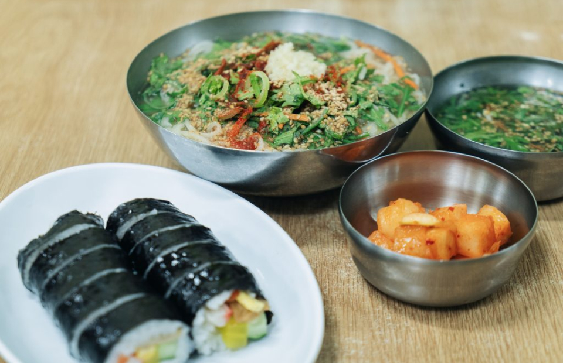

신발원
이재모피자
기장손칼국수
딤타오
다리집 본점
합천국밥집


- 대전충청지역본부 설비운영부 박선호 차장
- 신발원은 부산에 여행가는 친구들에게 제가 필수로 추천하는 곳이에요. 부산 차이나타운 초입에 위치해 있는데, 무려 1951년에 문을 연 가게라서 ‘백년가게’로 선정됐답니다. 3대에 걸쳐 그 맛을 유지하고 있죠. 가게 내부에는 신발원의 단골이라는 박찬욱 감독은 물론 이름만 대면 알만한 유명 인사들의 사인들도 빼곡히 전시되어 있어요. 그날 만든 음식은 그날에만 판매하는건 물론, 주문과 동시에 만두를 빚어 조리해주세요. 그리고 사람이 많아도 직원들이 정말 손놀림이 빠르고, 아무리 바빠도 친절함과 미소를 잃지 않는 것도 정말 좋아요. 이곳의 시그니처인 고기만두 외에도 바삭거리는 도톰한 피가 일품인 군만두, 쫄깃한 과자(뻥)와 함께 제공되는 따뜻하고 고소한 대만식 콩국도 놓쳐서는 안 될 페어링 메뉴니 놓치지 마세요. 아삭하고 새콤한 오이무침 역시 육즙을 가득 품은 만두와 짝을 이루며 입안을 개운하게 해준답니다!
 부산 동구 대영로243번길 62
부산 동구 대영로243번길 62 0507-1440-0195
0507-1440-0195 11:00-20:00, 화 휴무
11:00-20:00, 화 휴무
백년을 잊지 못할 만두신발원


- 평택기지본부 계전보전부 최선호 차장
- 이곳은 사장님의 스토리가 피자맛 만큼이나 대단한 곳이에요. 무려 사장님의 어머니인 이재모 님이 60세의 나이에 새로운 도전을 시작하며 연 가게라고 합니다. 삶의 지혜가 담긴 피자 맛이 감동적입니다. 금세 소문이 나서 부산의 대표 맛집으로 자리를 잡았죠. 좋은 재료를 사용해 만드는 피자는 한 번만 맛봐도 다른 곳의 피자와 차별점이 느껴져요. 임실 치즈, 미국산 토마토, 고급 밀가루 등 최고의 재료를 아낌없이 사용해 만들어 속이 편안하고 풍미가 뛰어납니다. 특히 피자의 맛을 좌우하는 치즈는 절대 타협하지 않고 제대로 된 것을 공수한다고 해요. 시그니처 메뉴는 이재모 크러스트 피자인데, 가장자리 부분에 스트링 치즈가 들어가 마지막까지 쫀득하게 늘어나는 치즈를 즐길 수 있어요.
- 부산시 중구 광복중앙로 31
- 051-255-9494
- 10:00-21:10, 일 휴무
이제, 다른 피자는 못 먹지 이재모피자
-

- 건설설계처 계전설계부 이종선 대리
- 서면시장 입구에 위치한 기장손칼국수는 제가 부산에 갈 때마다 가방을 멘 채로 달려가는 곳이에요. 자고로 칼국수는 손으로 뽑아야 맛이잖아요? 예나 지금이나 가게 간판 아래에서 서너 명의 직원이 칼국수 면을 뽑고 삶는 광경을 볼 수 있어요. 한편에서 밀가루를 반죽해 홍두깨로 밀면 다른 한 명이 반죽을 칼로 썰고, 면을 넘겨받은 직원이 커다란 솥에서 끊임없이 국수를 삶아냅니다. 메뉴는 손칼국수, 비빔손칼국수, 냉칼국수와 김밥 총 네 가지뿐이에요. 가장 많이 팔리는 메뉴는 뜨끈한 국물을 맛볼 수 있는 손칼국수고요. 갓 삶은 면 위에 멸치, 다시마, 마늘, 생강, 양파를 넣어 우린 국물을 붓고, 쑥갓과 통깨를 듬뿍 올린 다음 직접 만든 빨간 양념장과 고춧가루 그리고 다진 마늘을 넣어 손님상에 올리는데 생각만 해도 벌써 배가 고프네요. 아! 비빔손칼국수도 놓치지 마세요.
- 부산시 부산진구 서면로 56
- 051-806-6832
- 09:00-21:00
손칼국수는 끊을 수 없잖아 기장손칼국수
- 부산경남지역본부 사천지사 오승은 과장
- 부산이라고 밀면과 국밥만 있는 게 아닙니다. 딤섬을 한입 베어 무는 순간 진한 향과 맛이 강렬하게 퍼져 나오는 딤섬집이 바로 부산에 있어요. 가장 인기 많은 딤섬은 새우를 넣은 하가우와 큼직한 새우와 부추를 넣은 부추새우교자예요. 통새우 반죽을 튀겨 가지 사이에 넣은 뒤 간장 베이스 소스를 뿌린 가지튀김도 각 테이블에 빠지지 않는 인기 메뉴죠. 말랑한 빵 속에 따뜻한 고기를 담아낸 차슈바오번, 닭 육수로 맛을 낸 완탕면도 배를 든든히 채우기에 탁월하답니다. 저는 무엇보다 홍콩의 어느 가정집같은 인테리어가 마음에 들어요. 홍콩 현지에서 먹는 분위기까지 느낄 수 있어서 더 맛있는 걸까요? 해운대에 본점이 있는데 요즘은 전국의 백화점에도 입점하고 있다니 정말 맛집 맞죠?
- 부산시 해운대구 우동1로 25
- 051-741-3638
- 11:30-20:30, 화 휴무(브레이크 타임 15:00-17:00)
여기가 홍콩인가 싶은 맛 딤타오
- 부산경남지역본부 관리부 박종성 과장
- 부산에서는 떡볶이를 만들 때 기본적으로 밀떡이 아닌, 굵고 쫄깃쫄깃한 쌀떡을 사용한대요. 다리집은 쌀떡볶이의 정수를 맛볼 수 있는 가래떡 떡볶이집입니다. 진하고 새빨간 고추장 양념이 밴 가래떡을 노란 접시에 담아내는 다리집 떡볶이는 새콤달콤한 맛이 입안을 감돌다가 그 끝에 매콤함이 스치는데, 뒷맛이 깔끔해 자주 먹어도 물리지 않고 맛있게 즐길 수 있는 것이 특징이에요. 심지어 고추장은 집에서 직접 만든 걸 사용하신다니 감동일 수밖에요. 손바닥을 이어 붙인 것처럼 긴 오징어튀김도 빼놓을 수 없습니다. 아주 찰떡궁합이라구요.
- 부산시 수영구 남천바다로10번길 70
- 051-625-0130
- 11:30-21:00
쌀떡파라면 여깁니데이~ 다리집 본점
- 부산경남지역본부 관로보전부 송찬희 주임
- 돼지국밥은 부산이 고향인 저에게는 소울 푸드입니다. 그중에서도 제가 사랑하는 합천국밥집의 돼지국밥은 국물만 보면 평양냉면처럼 느껴질 정도로 빛깔이 맑아요. 다른 잡뼈 없이 앞다리 뼈만으로 만드는 국물은 텁텁하지 않고 담백해 냄새에 민감한 사람도 부담 없이 먹을 수 있죠. 맑은 국물 안에는 수육만큼이나 두툼한 돼지고기가 가득 들어 있는데, 돼지고기를 토렴해 제공하는 것 역시 합천국밥집의 특징이에요. 돼지고기는 간장과 매실액으로 맛을 낸 소스에 찍어 먹거나, 양념으로 버무린 부추겉절이나 배추김치를 얹어 먹으면 좋아요. 특히 시원하고 개운한 석박지는 비교적 슴슴한 국밥과 궁합이 좋아 최고의 반찬이죠. 합천국밥집 국밥의 개운한 맛의 비결은 멍게인데, 제철을 맞은 1톤가량의 멍게를 수급해 냉동한 뒤 김치를 담글 때마다 꺼내 쓴대요.
- 부산시 남구 용호로 235
- 051-628-4898
- 09:30-20:00(브레이크타임 14:00-14:30)
단전까지 전해지는
뜨거운 담백함을 아시나요 합천국밥집